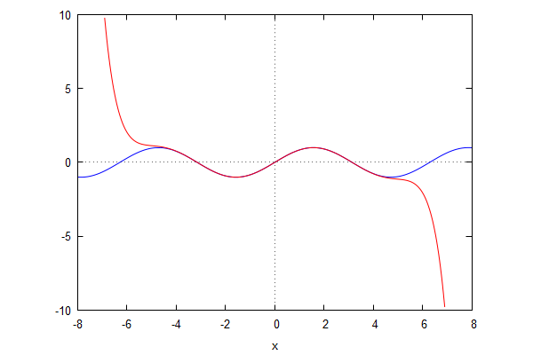
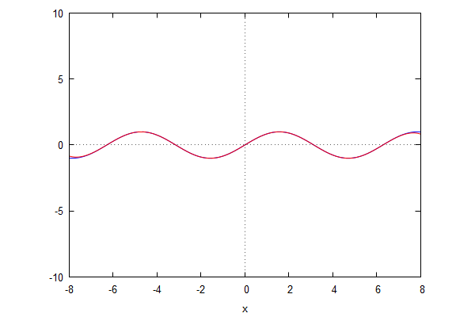
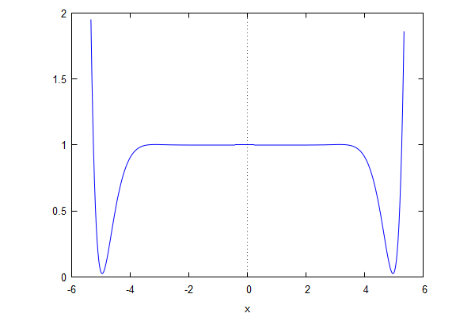

\( \DeclareMathOperator{\abs}{abs} \newcommand{\ensuremath}[1]{\mbox{$#1$}} \)
Lab sheet 10
1 Taylor series
| --> | y : log ( sqrt ( ( 1 + x ) / ( 1 − x ) ) ) ; |
\[\operatorname{(y) }\frac{\log{\left( \frac{x+1}{1-x}\right) }}{2}\]
| --> | a ( n ) : = subst ( x = 0 , factor ( diff ( y , x , n ) ) ) / n ! ; |
\[\operatorname{ }\operatorname{a}(n):=\frac{\operatorname{subst}\left( x=0,\operatorname{factor}\left( \frac{{{d}^{n}}}{d {{x}^{n}}} y\right) \right) }{n!}\]
| --> | makelist ( a ( n ) , n , 1 , 10 ) ; |
\[\operatorname{ }[1,0,\frac{1}{3},0,\frac{1}{5},0,\frac{1}{7},0,\frac{1}{9},0]\]
| --> | ys0 : sum ( a ( n ) · x ^ n , n , 0 , 12 ) ; |
\[\operatorname{(ys0) }\frac{{{x}^{11}}}{11}+\frac{{{x}^{9}}}{9}+\frac{{{x}^{7}}}{7}+\frac{{{x}^{5}}}{5}+\frac{{{x}^{3}}}{3}+x\]
| --> | ys1 : taylor ( y , x , 0 , 12 ) ; |
\[\operatorname{(ys1) }x+\frac{{{x}^{3}}}{3}+\frac{{{x}^{5}}}{5}+\frac{{{x}^{7}}}{7}+\frac{{{x}^{9}}}{9}+\frac{{{x}^{11}}}{11}+...\]
| --> | expand ( taytorat ( ys1 ) ) − ys0 ; |
\[\operatorname{ }0\]
| --> | kill ( a , y , ys0 , ys1 ) $ |
| --> | s : expand ( taytorat ( taylor ( sin ( x ) , x , 0 , 12 ) ) ) ; |
\[\operatorname{(s) }-\frac{{{x}^{11}}}{39916800}+\frac{{{x}^{9}}}{362880}-\frac{{{x}^{7}}}{5040}+\frac{{{x}^{5}}}{120}-\frac{{{x}^{3}}}{6}+x\]
| --> | wxplot2d ( [ sin ( x ) , s ] , [ x , − 8 , 8 ] , [ y , − 10 , 10 ] , [ legend , false ] ) ; |
\[\]\[plot2d: some values were clipped.\]
\[\operatorname{ }\]

\[\operatorname{ }\]
| --> |
t
(
n
)
:
=
expand
(
taytorat
(
taylor
(
sin
(
x
)
,
x
,
0
,
n
)
)
)
;
r ( n ) : = expand ( taytorat ( taylor ( cos ( x ) , x , 0 , n ) ) ) ; |
\[\operatorname{ }\operatorname{t}(n):=\operatorname{expand}\left( \operatorname{taytorat}\left( \operatorname{taylor}\left( \sin{(x)},x,0,n\right) \right) \right) \]
\[\operatorname{ }\operatorname{r}(n):=\operatorname{expand}\left( \operatorname{taytorat}\left( \operatorname{taylor}\left( \cos{(x)},x,0,n\right) \right) \right) \]
| --> | wxplot2d ( [ sin ( x ) , t ( 20 ) ] , [ x , − 8 , 8 ] , [ y , − 10 , 10 ] , [ legend , false ] ) ; |
\[\operatorname{ }\]

\[\operatorname{ }\]
| --> | q : expand ( t ( 10 ) ^ 2 + r ( 10 ) ^ 2 ) ; |
\[\operatorname{(q) }\frac{{{x}^{20}}}{13168189440000}-\frac{{{x}^{18}}}{164602368000}+\frac{{{x}^{16}}}{3483648000}-\frac{{{x}^{14}}}{152409600}+\frac{{{x}^{12}}}{21772800}+1\]
| --> | wxplot2d ( q , [ x , − 6 , 6 ] , [ y , 0 , 2 ] ) ; |
\[\]\[plot2d: some values were clipped.\]
\[\operatorname{ }\]

\[\operatorname{ }\]
| --> | kill ( s , t , r , q ) $ |
| --> | y : x · ( 1 + x ) / ( 1 − x ) ^ 3 ; |
\[\operatorname{(y) }\frac{x\, \left( x+1\right) }{{{\left( 1-x\right) }^{3}}}\]
| --> | taylor ( y , x , 0 , 20 ) ; |
\[\operatorname{ }x+4 {{x}^{2}}+9 {{x}^{3}}+16 {{x}^{4}}+25 {{x}^{5}}+36 {{x}^{6}}+49 {{x}^{7}}+64 {{x}^{8}}+81 {{x}^{9}}+100 {{x}^{10}}+121 {{x}^{11}}+144 {{x}^{12}}+169 {{x}^{13}}+196 {{x}^{14}}+225 {{x}^{15}}+256 {{x}^{16}}+289 {{x}^{17}}+324 {{x}^{18}}+361 {{x}^{19}}+400 {{x}^{20}}+...\]
| --> | kill ( y ) $ |
| --> | taylor ( sin ( x ) , x , %pi / 2 , 12 ) ; |
\[\operatorname{ }1-\frac{{{\left( x-\frac{\ensuremath{\pi} }{2}\right) }^{2}}}{2}+\frac{{{\left( x-\frac{\ensuremath{\pi} }{2}\right) }^{4}}}{24}-\frac{{{\left( x-\frac{\ensuremath{\pi} }{2}\right) }^{6}}}{720}+\frac{{{\left( x-\frac{\ensuremath{\pi} }{2}\right) }^{8}}}{40320}-\frac{{{\left( x-\frac{\ensuremath{\pi} }{2}\right) }^{10}}}{3628800}+\frac{{{\left( x-\frac{\ensuremath{\pi} }{2}\right) }^{12}}}{479001600}+...\]
| --> | taylor ( cos ( x ) , x , 0 , 12 ) ; |
\[\operatorname{ }1-\frac{{{x}^{2}}}{2}+\frac{{{x}^{4}}}{24}-\frac{{{x}^{6}}}{720}+\frac{{{x}^{8}}}{40320}-\frac{{{x}^{10}}}{3628800}+\frac{{{x}^{12}}}{479001600}+...\]
2 Revision
| --> | fpprec : 20 ; |
\[\operatorname{(fpprec) }20\]
| --> | bfloat ( cos ( log ( %pi + 20 ) ) ) ; |
\[\operatorname{ }-9.999999992436801331b-1\]
| --> | f ( x ) : = x ^ 2 − 29 / 16 ; |
\[\operatorname{ }\operatorname{f}(x):={{x}^{2}}-\frac{29}{16}\]
| --> | f ( 0 ) ; |
\[\operatorname{ }-\frac{29}{16}\]
| --> | f ( f ( f ( − 1 / 4 ) ) ) ; |
\[\operatorname{ }-\frac{1}{4}\]
| --> | a : ( 1 + x ) ^ 5 − 3 · ( 1 + x ) ^ 4 + 5 · ( 1 + x ) ^ 3 − 3 · ( 1 + x ) ^ 2 + 3 · ( 1 + x ) + 3 ; |
\[\operatorname{(a) }{{\left( x+1\right) }^{5}}-3 {{\left( x+1\right) }^{4}}+5 {{\left( x+1\right) }^{3}}-3 {{\left( x+1\right) }^{2}}+3 \left( x+1\right) +3\]
| --> | b : ( 7 · x ^ 2 − 6 · x − x ^ 8 ) / ( x − 1 ) ^ 2 ; |
\[\operatorname{(b) }\frac{-{{x}^{8}}+7 {{x}^{2}}-6 x}{{{\left( x-1\right) }^{2}}}\]
| --> | a : factor ( expand ( a ) ) ; |
\[\operatorname{(a) }{{x}^{5}}+2 {{x}^{4}}+3 {{x}^{3}}+4 {{x}^{2}}+5 x+6\]
| --> | b : factor ( b ) ; |
\[\operatorname{(b) }-x\, \left( {{x}^{5}}+2 {{x}^{4}}+3 {{x}^{3}}+4 {{x}^{2}}+5 x+6\right) \]
| --> | expand ( b + x · a ) ; |
\[\operatorname{ }0\]
| --> | kill ( a , b ) $ |
| --> | u : ( ( x ^ 12 − 1 ) · ( x ^ 2 − 1 ) / ( ( x ^ 6 − 1 ) · ( x ^ 4 − 1 ) ) ) ; |
\[\operatorname{(u) }\frac{\left( {{x}^{2}}-1\right) \, \left( {{x}^{12}}-1\right) }{\left( {{x}^{4}}-1\right) \, \left( {{x}^{6}}-1\right) }\]
| --> | u : factor ( u ) ; |
\[\operatorname{(u) }{{x}^{4}}-{{x}^{2}}+1\]
| --> | v : expand ( u ^ 10 ) ; |
\[\operatorname{(v) }{{x}^{40}}-10 {{x}^{38}}+55 {{x}^{36}}-210 {{x}^{34}}+615 {{x}^{32}}-1452 {{x}^{30}}+2850 {{x}^{28}}-4740 {{x}^{26}}+6765 {{x}^{24}}-8350 {{x}^{22}}+8953 {{x}^{20}}-8350 {{x}^{18}}+6765 {{x}^{16}}-4740 {{x}^{14}}+2850 {{x}^{12}}-1452 {{x}^{10}}+615 {{x}^{8}}-210 {{x}^{6}}+55 {{x}^{4}}-10 {{x}^{2}}+1\]
| --> | coeff ( v , x , 6 ) ; |
\[\operatorname{ }-210\]
| --> | kill ( u , v ) $ |
| --> | eqns : [ x ^ 2 + y ^ 2 + z ^ 2 = 9 , ( x − 1 ) ^ 2 + ( y − 1 ) ^ 2 + ( z − 1 ) ^ 2 = 2 , 4 · x ^ 2 + y · z = 2 · x · ( y + z ) ] ; |
\[\operatorname{(eqns) }[{{z}^{2}}+{{y}^{2}}+{{x}^{2}}=9,{{\left( z-1\right) }^{2}}+{{\left( y-1\right) }^{2}}+{{\left( x-1\right) }^{2}}=2,y z+4 {{x}^{2}}=2 x\, \left( z+y\right) ]\]
| --> |
sublist
(
solve ( eqns ) , lambda ( [ e ] , integerp ( subst ( e , x ) ) and integerp ( subst ( e , y ) ) and integerp ( subst ( e , z ) ) ) ) ; |
\[\operatorname{ }[[z=2,y=2,x=1]]\]
| --> | load ( "to_poly_solve" ) $ |
| --> | to_poly_solve ( sin ( θ ) ^ 2 = 3 · cos ( θ ) ^ 2 , θ ) ; |
\[\operatorname{ }\operatorname{\% union}\left( [\theta =\frac{2 \ensuremath{\pi} \ensuremath{\mathrm{\% z7}}+\frac{2 \ensuremath{\pi} }{3}}{2}],[\theta =\frac{2 \ensuremath{\pi} \ensuremath{\mathrm{\% z9}}-\frac{2 \ensuremath{\pi} }{3}}{2}]\right) \]
| --> | kill ( eqns ) $ |
| --> |
sublist
(
solve ( [ x ^ 2 − y ^ 2 = 1 , 2 · x · y = 1 ] ) , lambda ( [ e ] , imagpart ( subst ( e , x ) ) = 0 and imagpart ( subst ( e , y ) ) = 0 and subst ( e , x ) > 0 ) ) ; |
\[\operatorname{ }[[y=\frac{\sqrt{\sqrt{2}-1}}{\sqrt{2}},x=\frac{\sqrt{\sqrt{2}+1}}{\sqrt{2}}]]\]
| --> | find_root ( x = log ( x + 20 ) , x , 2 . 8 , 3 . 2 ) ; |
\[\operatorname{ }3.141633302801037\]
Created with wxMaxima.
The source of this Maxima session can be downloaded here.